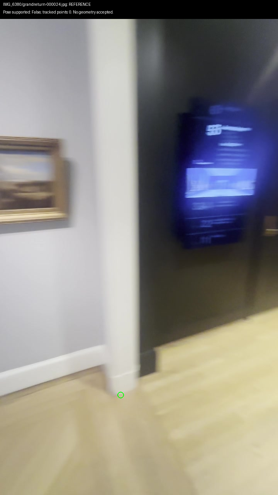
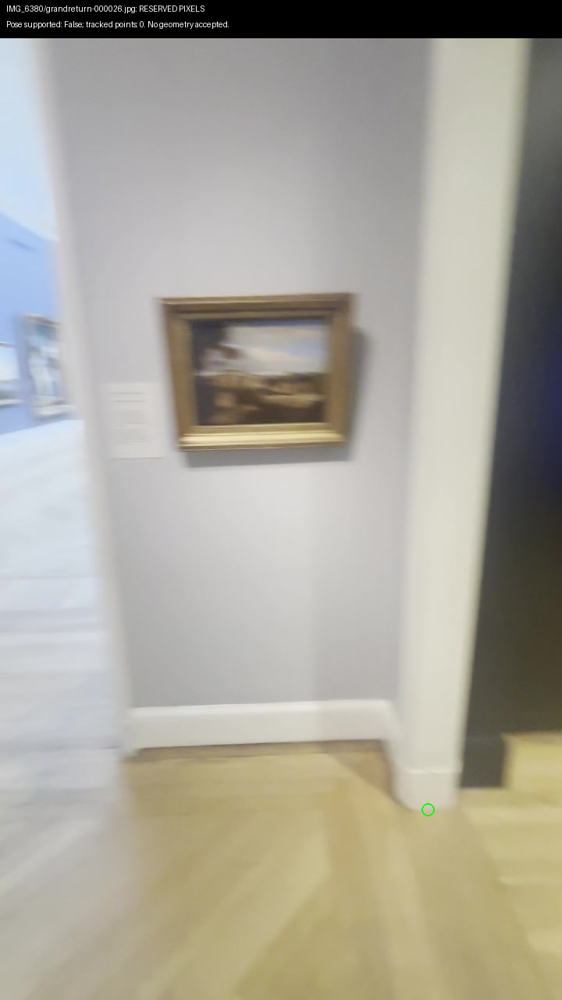
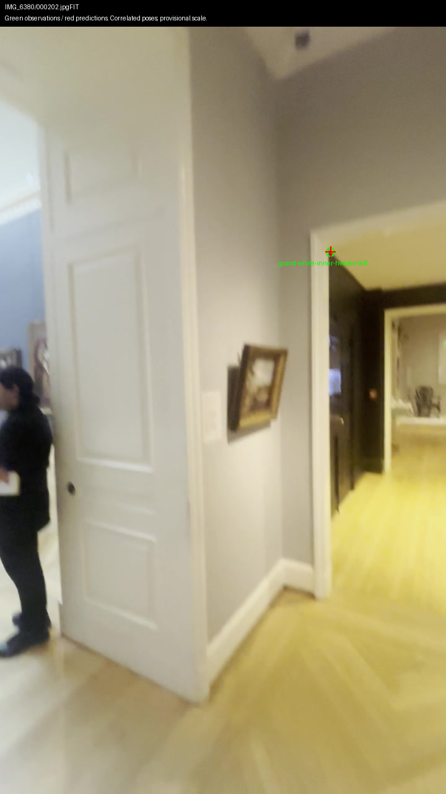
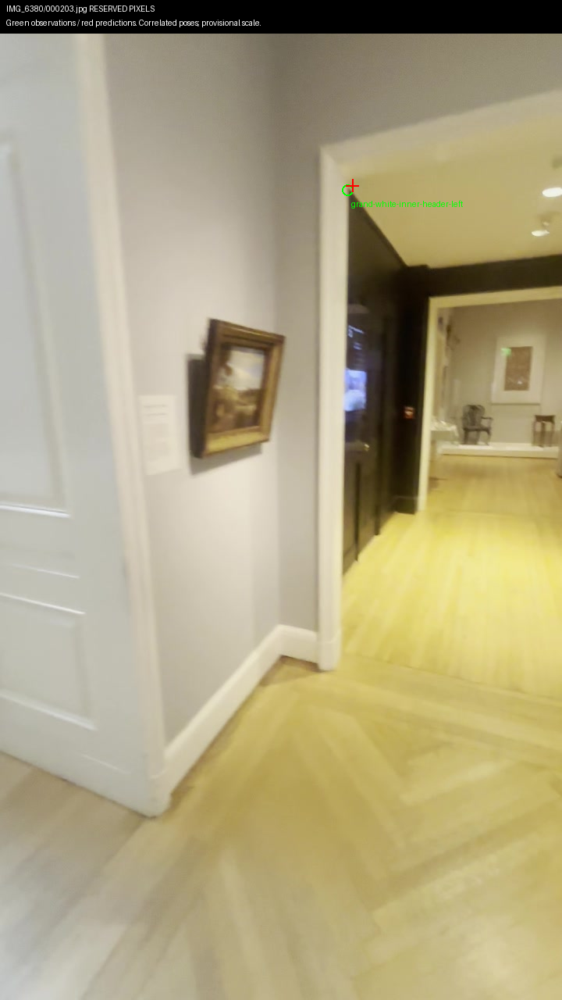
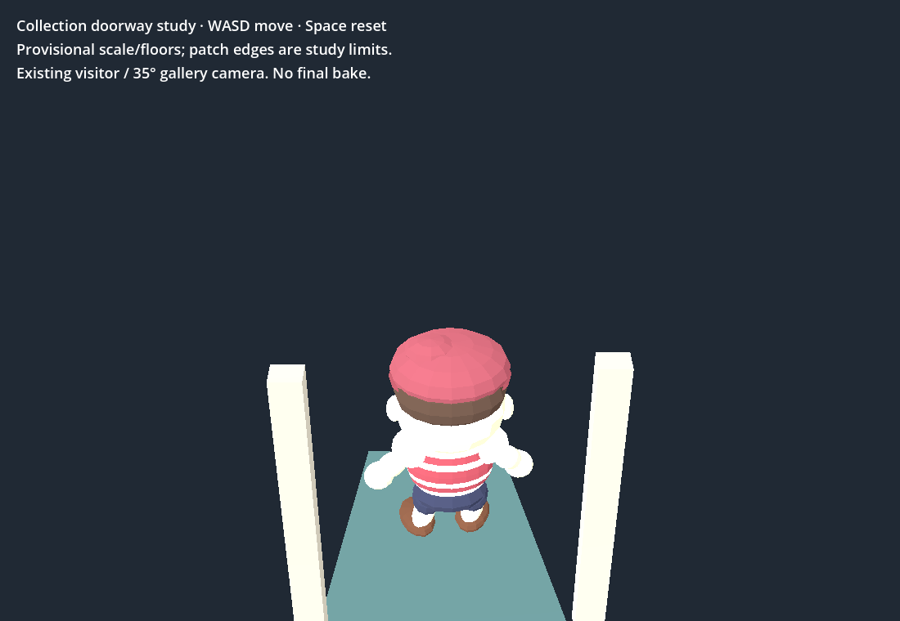

Fresh return poses remain unsupported after verified camera calibration. Frames 24/26/28 have 0/0/5 tracked 3D points. No floor, collision or invented connector added.


Final calibrated query report · CUDA extraction/matching and 594.33px camera proof · Preserved camera assertion failure. COLMAP PER_FOLDER replaces the existing camera; AUTO preserves it, verified before matching.


Header measurement and uncertainty. Correlated video poses, provisional scale. A corner is not a complete aperture.
Play the existing bounded doorway study · WASD moves; Space resets. Patch edges are study limits, not museum walls.

All 24 native and Chrome checks plus real keyboard round trip pass. Native GPU log confirms RTX 4070 SUPER. Chrome ready 3.112s; sampled p95 16.67ms. Native timing excluded because Shell checks overlapped; browser ANGLE reports D3D12 RTX 4070 SUPER. JS heap is 23.05MB, excluding complete WASM/GPU/process memory. Browser report · Native report.
Repository/diff/compilation checks pass. Shell has five previously observed failures; initial crash and software runs retained. Failure comparison · Verifier · Sources, hashes, $0 spend and limitations. Geometry coverage, independent scale, sculpture mesh and bake remain incomplete. Collection prototype only; 3D Viewer unchanged.